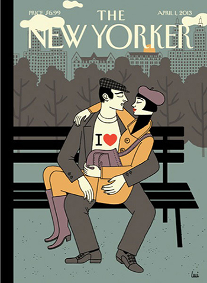

There are many aspects about The New Yorker Magazine that fascinating people with their poetic, literate and historical point of view. The printed publication does a great job in recreating the 19th century atmosphere. Their illustration covers and images sure enhance the beauty of the classical typography.
The website is an online version of The New Yorker which is for everyone to read anytime anyplace from their personal devices. The home page has white background and black text next to the pictures. The articles are categorized, and then organized into tiles. The overall look of the website is futuristic yet reader-friendly.
Their web design layout is accessible, neat and simple; maybe too simple to make an impression of the golden old time of the 19th century for the readers. The typography used is Irvin, which is a very hand-written like, whimsical typeface. They sure bring back the classical, elegant feeling from a couple of very first publications; but they seemed to be missed match with the rest of the other elements. Even though Irvin is only used for the title, the typeface does not play a supportive role in emphasizing the content of the articles, especially the ones with momentous topics like wars, finance or politics.